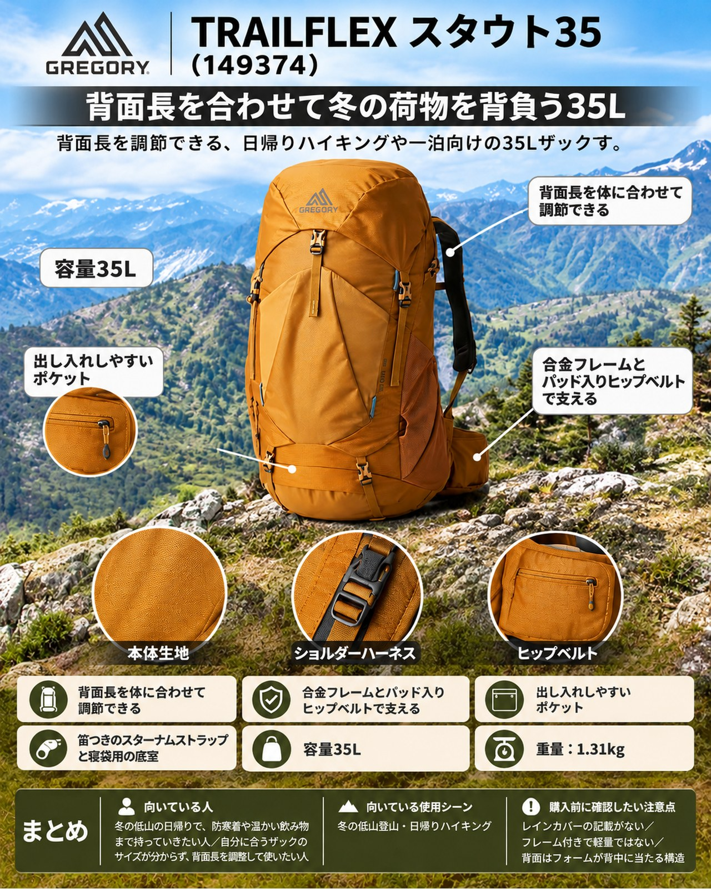

11月下旬は北アルプスの山小屋が営業を終え、登山の中心は低山に移ります。今週は24日に広い範囲で雨の予報があり、25〜26日は冷え込む見込みです。冬の日帰りでは、ダウンや予備の手袋、温かい飲み物など荷物が増えがちです。
導入
11月下旬は北アルプスの山小屋が営業を終え、登山の中心は低山に移ります。今週は24日に広い範囲で雨の予報があり、25〜26日は冷え込む見込みです。冬の日帰りでは、ダウンや予備の手袋、温かい飲み物など荷物が増えがちです。
今回紹介するのは、グレゴリーの「TRAILFLEX スタウト35」（品番 149374）です。日帰りハイキングや一泊の短い旅行向けのモデルです。容量は35Lで、背面長を調節できるのが特徴です。
今回は「体に合わせて調整できるか」に注目します。ザックのサイズ選びに自信がない人や、冬の荷物を腰で支えて背負いたい人に向いたモデルです。
基本スペック
※仕様と価格は2026年11月23日時点のもの。対応背面長・ウエストは米国での表記。
| 項目 | 内容 |
|---|---|
| 商品名 | TRAILFLEX スタウト35 |
| 品番 | 149374 |
| 価格 | ¥30,800（税込） |
| 容量 | 35L |
| 重量 | 1.31kg |
| 寸法 | 68.6×33.0×25.4cm |
| サイズ | ワンサイズ（背面長調節可） |
| 素材 | ナイロン100% |
| フレーム | ウィッシュボーン合金フレーム |
| 対応背面長 | 16〜21インチ（米国表記） |
| 対応ウエスト | 28〜48インチ（米国表記） |
背面長を体に合わせて調節できる
背面は通気性の高い3Dフォームのバックパネルで、背面長は調節可能です。対応する背面長は16〜21インチ（米国表記）です。サイズ展開がワンサイズなので、背中の長さに合わせて調整して使う前提の作りです。
合金フレームとパッド入りヒップベルトで支える
ウィッシュボーン合金フレームとパッド入りヒップベルトで荷物を支えます。荷物を安定させつつ、ねじれにしなやかに追従するフレームです。ヒップベルトは腰を包むラップアラウンド型で、ショルダーハーネスは穴あきの通気性のある作りです。最大積載量は35ポンド（米国表記）です。防寒着や水で重くなる冬の日帰りでも、腰で支えて歩く構成になっています。
出し入れしやすいポケット
ヒップベルトには大きなジッパー付きポケットがあり、ザックを下ろさずに行動食や手袋を取り出せます。ほかに、キークリップ付きのジッパー付きトップポケット、上下にコンプレッションストラップが付いた両サイドのメッシュポケット、フロントの特大ストレッチメッシュポケットがあります。
笛つきのスターナムストラップと寝袋用の底室
胸のスターナムストラップにはセーフティーホイッスルが付いています。内部にはハイドレーションスリーブがあり（リザーバーは別売り）、バンジー付きのトレッキングポール／ツール取り付けポイント、二層構造の強化底パネルも備えます。本体へは上部と底部からアクセスでき、底にジッパー付きの寝袋用コンパートメントがあります。
デメリット・注意点
- レインカバーの記載がない：付属のレインカバーの記載がありません。24日のような雨の日に備えるなら、別にレインカバーや防水のスタッフバッグを用意する必要があります。
- フレーム付きで軽量ではない：フレームやパッド入りのヒップベルトを備える分、重量は1.31kgです。荷物の少ない日帰りで、とにかく軽さを優先したい人には重く感じる可能性があります。
- 背面はフォームが背中に当たる構造：背面は穴あきの3Dフォームパネルで、背中から浮かせるメッシュ構造ではありません。汗をかきやすい人は、登りでの蒸れに注意してください。
- メインの開口部はドローコード式：メイン気室の上部は、クイックプルドローコードで閉じてトップのウェビングで押さえる作りです。フロントが大きく開く構造ではないので、底の物を出すときは底部のアクセスを使うか、詰める順番を工夫する必要があります。
- 背面長の数値は日本の表記にない：日本の表記には「調節可能」とあるだけで、数値は米国のインチ表記です。購入前に店頭で背負って調整範囲を確かめると安心です。
向いている人・向いていない人
◎向いている人
- 冬の低山の日帰りで、防寒着や温かい飲み物まで持っていきたい人
- 自分に合うザックのサイズが分からず、背面長を調整して使いたい人
- 行動中にヒップベルトのポケットから小物を出し入れしたい人
△向いていない人
- 荷物が少なく、1kgを切るような軽いザックを求める人
- 背中の蒸れを特に抑えたい人
- レインカバーが付属したザックを探している人
まとめ
グレゴリーの「TRAILFLEX スタウト35」は、背面長を調節できるワンサイズの35Lザックです。ウィッシュボーン合金フレームとパッド入りのヒップベルトで荷物を支え、ヒップベルトの大きなポケットやフロントのストレッチメッシュなど、出し入れしやすい収納がそろっています。
重量は1.31kgで、レインカバーの記載はありません。軽さよりも背負い心地の調整を重視し、荷物が増える冬の日帰りを安定して歩きたい人に向いた1つです。
この記事で紹介した商品
価格・重量・在庫は各ブランド公式サイトの記載（確認日つき）にもとづきます。商品を押すと、購入先を選べます。
この記事にはアフィリエイト広告が含まれます。リンク先での購入により、当サイトが報酬を受け取る場合があります。山行の前には、最新の気象とルートの状況を必ずご確認ください。